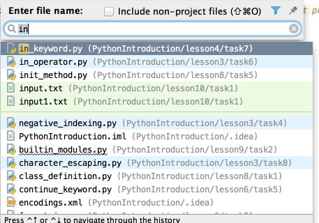

You don't need to guess which __init__.py or lesson you are looking at...
Make the editor tabs and the lines in navigation lists stand out using the File Colors page of the Appearance & Behavior settings.
